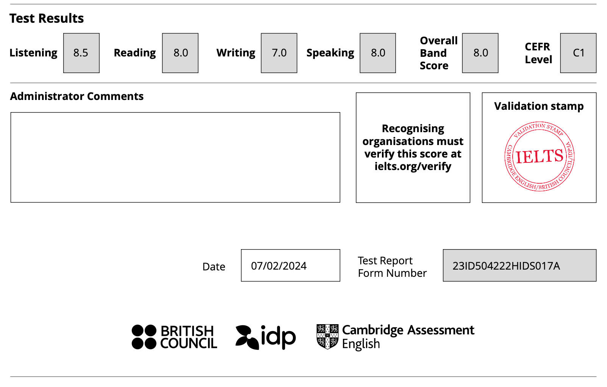
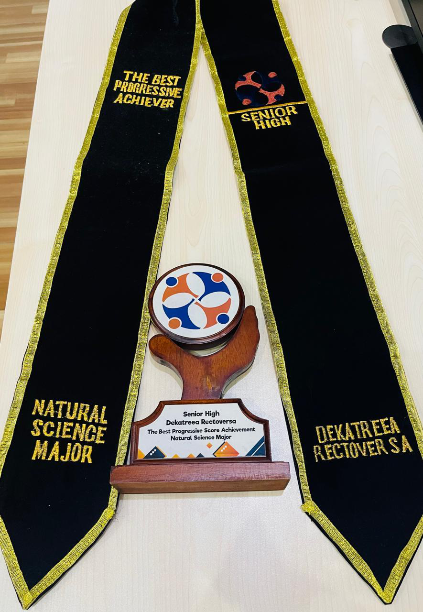

My name is Salman Faiz Hidayat, but you can call me Faiz. I am an undergraduate computer science
student in Gadjah Mada University.
I am passionate in continuous learning in the field of software engineering and
artificial intelligence. In fact, this website is my way of practicing software engineering!
You can also see my AI models that I've built in the past in my github, which I will link in this
website :)
Outside of technical skills, I am an avid leader, who can coordinate works and talents in a team or organization.
I also work great with people, mainly by the virtue of listening to others more than talking.
OmahTI:
OmahTI is an organization run by computer science students of Gadjah Mada University. The organization is divided into 8
disciplines of computer science, which are frontend, backend, mobile development, game development, data science/AI,
cyber security, and competitive programming. Our 4 main pillars best explain what we do in each division: training,
service, competitions, and projects. In short, here we focus on honing our technical skills related to computer science disciplines.
Position(s) Held in OmahTI:
Project Manager (May 2024 - Present)
Member of Data Science/AI Division (May 2024 - Present)
KOMATIK:
KOMATIK is an organization run by Gadjah Mada University students, from various faculties, that focuses on developing
technical skills of various IT fields, and competing in national or international IT competitions. There are 7 technical
divisions: Compeititve Programming, Cyber Security (nicknamed ASGAMA), Software Research Development (SRD), eSPORTS,
Internet of Things (IOT GAMA), Game Development (Game Lab), UI/UX (UX GAMA).
Position(s) Held in KOMATIK:
Member of Software Research Development Division (February 2024 - Present)
GDSC UGM:
GDSC UGM is one of Google Developers Student Club organization that is based in Gadjah Mada University. During our GDSC
term, we were divided into teams to focus on developing apps that contributes to one of the 17 Sustainable Development Goals (17 SDGs). Our
creation will then be submitted for Google Solutions Challenge 2023.
Global Mandiri High School Student Council:
Student Council is supposed to act as a student organization that is responsible for organizing student events and fulfilling
the organizations programs. Educational division in particular is responsible for organizing events that are related to
the academics of the students, and assisting them to improve their portfolio through our programs. Our programs include
internal school olympiad, tutoring sessions, and infographics about competitions that students can join outside of school.
Position(s) Held in Global Mandiri High School Student Council:
Head of Educational Division (November 2021 - September 2022)
Skills
Computer Science Fundamentals
Data Science (Preprocessing, gaining insights, etc)
Machine Learning/Deep Learning
Software Engineering Fundamentals
Team/Project Management
Team Communication
And much more to come as I learn them!
Certifications
Responsive Web Design Certification by freeCodeCamp Google Fundamentals of Digital Marketing Intro to Machine Learning Intermediate Machine Learning Intro to Deep Learning Intro to Cloud Computing

Academic IELTS Certification (Band 8.0) German Language Certification Goethe Zertifikat B1
Awards
3rd Place Winner of Data Royale, an internally held AI competition in the Department of Computer
Science and Electronics, Gadjah Mada University.
The project was given as a bonding program for new OmahTI members. It is awarded to the team with the
project that has the most impact. Our project came in the form of an interactive website game that
teaches the user about history, which is a unique theme given to our team at the bgeinning.

It is awarded to the student with the best progress throughout the 3-year academic term of high school.
See more of my projects:
A model for predicting music genre (Data Royale submission)
A model for predicting one's cholesterol level (MCF ITB submission, a competition held by Bandung Institute of Technology)
A model for predicting laptop prices (OmahTI recruitement submission)


.png)